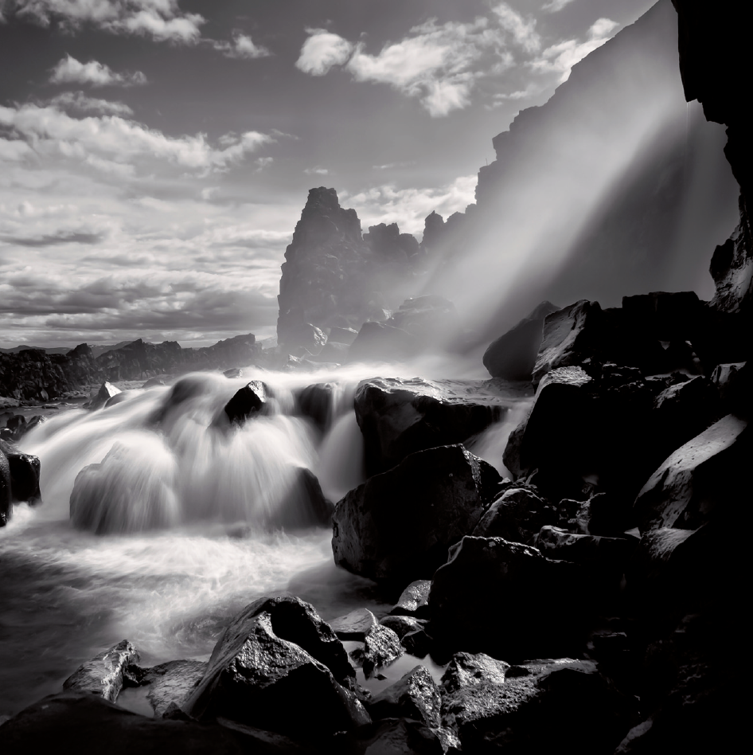
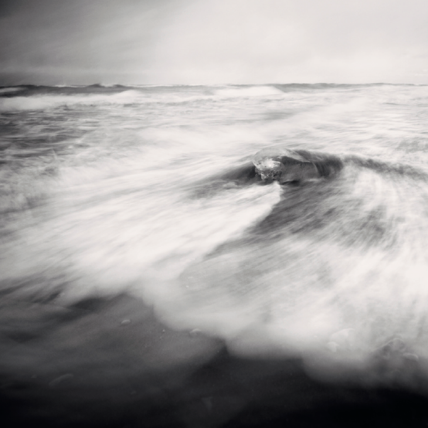

Langzeitbelichtung
GESTALTUNGSMITTEL
Die Langzeitbelichtung erlaubt mir durch die Entfernung unerwünschter Details im Bild, den Betrachter auf die in meinen Augen wichtigen Bildbestandteile zu lenken.
Bewegungsunschärfe
Im Grund genommen hat jede Langzeitbelichtung auch eine Bewegungsunschärfe zur Folge. Mal mehr, mal weniger, das hängt natürlich von der Belichtungszeit ab! Mithilfe der Bewegungsunschärfe spreche ich der Aufnahme sehr viel mehr Dynamik zu, als ich jemals mit einer »normalen« Belichtungszeit erreichen würde. Wie stark die Bewegungsunschärfe im Bild sichtbar sein soll, hängt von dem zu fotografierenden Objekt selbst und von dessen Geschwindigkeit ab.